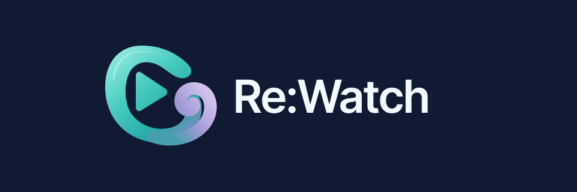
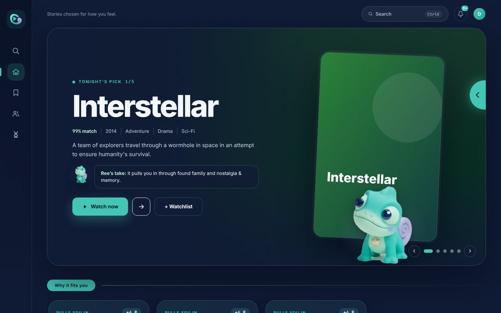
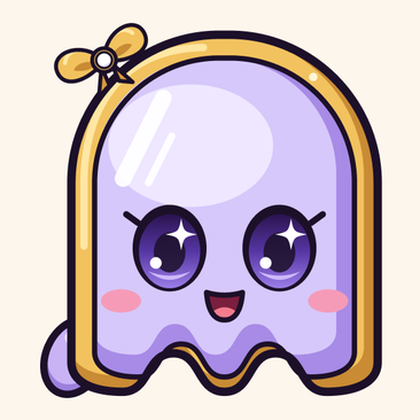
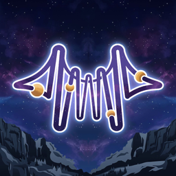
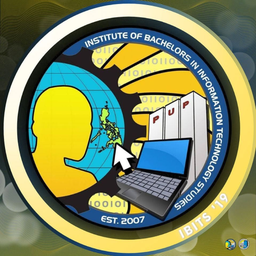

Re:Watch
Finds movies, TV, anime and K-drama by how you want to feel. Match scores come from a taste model I built, and every score lists the reasons that add up to it.
View project →Availability
Looking for data science, analytics and technical internships. Based in Manila, Philippines.
email
About // 02
BSIT student at PUP Manila, specializing in Data Science, and a DOST-SEI merit scholar.
I'm most interested in data science and analytics: working out what a dataset can honestly say, and how sure we can be about it. I also build software, so I can turn analysis into tools people use. In Re:Watch I built an explainable taste model; in AURA I trained a face-shape classifier and held it back from launch when it failed my own fairness check. I'm looking for data science, analytics and technical internships.
Projects // 03
Two public projects, each built around a real problem.


Finds movies, TV, anime and K-drama by how you want to feel. Match scores come from a taste model I built, and every score lists the reasons that add up to it.
View project →

A mobile app (in development) that reads a selfie on your phone to estimate face shape and colour season, then suggests makeup and outfits from your own wardrobe.
View project →All projects on GitHub → github.com/eryzaimatong
Skills // 04
What I work with across data and software, plus the tools I use to build and collaborate.
Underlined: used in my projects. Re:Watch uses Java, Spring Boot, PostgreSQL and React; AURA uses Python, scikit-learn, NumPy and FastAPI.
Experience // 05
School, a scholarship, and a few programs that shaped how I work.

2024 to 2028 (expected)
Polytechnic University of the Philippines, Manila
Specializing in Data Science.
2024 to present
DOST-SEI (Department of Science and Technology)
Merit scholarship from the DOST Science Education Institute, 2024 cohort, supporting my BS degree.
Sep to Dec 2026 · in progress
University of Tokyo, Matsuo-Iwasawa Lab (JICA-supported)
Online program: attend sessions, complete homework, join competitions and build a final project.
Certification & training
Leadership // 06
Teams and communities I design for, build with, or help lead.

Cisco NetConnect · PUP – Manila
Design event recap posts and other graphics for the organization's Facebook page.
View deliverables

IBITS · Institute of Bachelors in Information Technology Studies
Member of the Program and Activities Department, working on logistics and resource operations.
Google Developer Groups on Campus · PUP 2026–27
Turning research and data into meaningful insights to guide organizational decisions, strategic planning, and performance evaluation.
Contact // 07
I'm looking for data science, analytics and technical internships. If you're hiring, or want to talk about Re:Watch or AURA, email me. Based in Manila, Philippines.